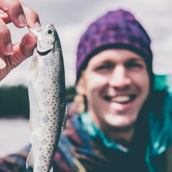
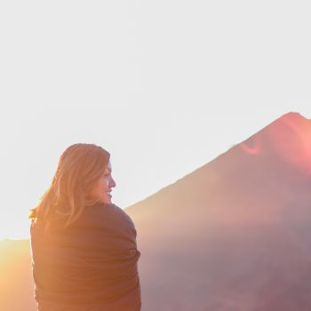
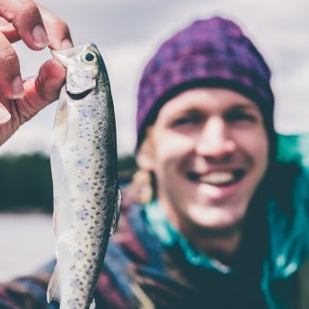
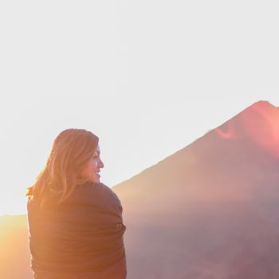
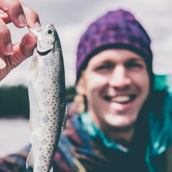
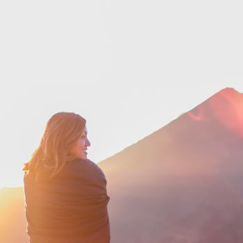

Camp Wasatch is a weekend summer camp where adults detox from their digital devices. Campers will find ways to live a healthy balance between their work and home life while doing meaningful outdoor activites.


Camp Wasatch is able to provide a unique experience by partnering with Franklin Covey, worldwide leader in performance improvement. Not only will participants detox from technology, they will learn skills to live more fulfilling family and work lives. Campers will leave feeling more balanced in their life and motivated to succeed in all areas without the distraction of devices.
This is not a seminar or a corporate retreat. Camp Wasatch is an outdoor summer camp for adults that has been infused with the Franklin Covey 7 Habits for highly effective people principles. While other camps provide a setting to get away from technology, the experiences and lessons learned from Camp Wasatch will provide lasting learning that will benefit each camper years after camp is over.
In a world with the ever-growing influence of technology, people are getting further and further away from what is real. As people’s lives get more infused with the internet the chasms between the digital world and the real world grow wider. We seek to provide an opportunity to reconnect, stay grounded, and find meaning. We seek to return to nature, return to being people, and return to what gives us lasting happiness.
We aim to live our lives unbound from the demands of technology. We will empower people with the confidence to not be ruled by their devices. The world will never be rid of invasive technology or the internet, but we can learn to use it properly without it running our lives. Our goal is to give every camper a positive experience that will change how they use technology, make them a better family member, and give them a grounded foundation for their life.